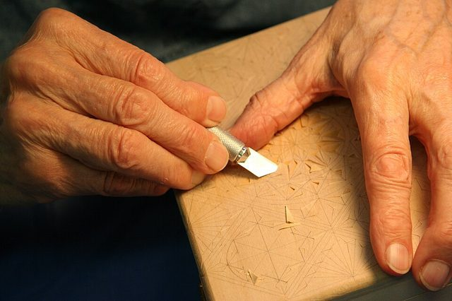

Home / Living Traditions / Northern and Eastern Europe
Playable heritage gameChip carving
Cut the chips of a rosette from a lime-wood board: a ring of triangles and a six-pointed star.



How to play
- The lit piece in its frame shows what to make.
- Drag across the block to take wood away; two chisels, fine and broad. Zoom in to work close and use the Hand to move the view.
- Rub the Wax cloth over the finished piece, then press Check.
Rules at a glance
- Removing a cell inside the shape costs as much as leaving one outside it.
- Undo takes back one stroke. Waxing is for the finish and does not change the score.
- Three stars for 88 or more, two stars for 65 and one star for 40.
- Watch and learn carves and waxes a whole round for you.
About the tradition
Chip carving removes small three-cornered chips with a knife, row by row, so that light and shade make a pattern. Geometric rosettes drawn with a compass decorate boxes, plates and furniture across the Alps.
Origins
A living tradition passed from person to person; it is not tied to a single dated origin. It belongs to the cultural world of Northern and Eastern Europe.
Credits
- Photo: Jonathunder, CC BY-SA 3.0, source on Wikimedia Commons
- Text: CC BY-SA 4.0, World Heritage Games.
Sources

Get the app
Chip carving is coming to the App Store and Google Play. One app, many traditions, no account needed.
Included in Woodcraft & Metal of the World
Coming to theApp StoreComing toGoogle Play
More games to play


Tessellated Mosaic Making
Italy +1 · Crafts and makingPlay preview · in the Craft Designs of the World app

More from Germany


Black Forest Cuckoo Clock Workshop
Germany · Crafts and making


Clockwork Movement Builder
Germany +2 · Puzzles and mind games
Don't Get Angry
Germany · Board and table games